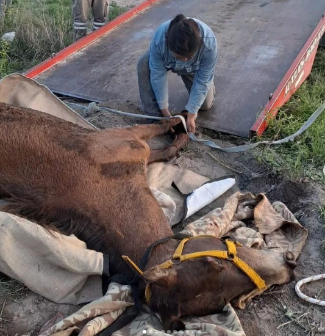

Somos una asociación civil sin fines de lucro que trabaja diariamente en la rehabilitación de equinos rescatados en situaciones de emergencia, negligencia o abandono. Actualmente, contamos con una población de más de 50 caballos con distintas y complejas patologías. Apostamos a concientizar a la sociedad para poder erradicar la problemática de la tracción a sangre animal. Nos encontramos en la ciudad de Bahía Blanca.

Desde el año 2014 llevamos más de 130 rescates
Más de 9 años mejorando la calidad de vida de caballos victimas del maltrato a el abandono.
Actualmente 8 animales están con tratamiento veterianario
Todos los procedimientos y tratamientos realizados en el Centro están preestablecidos en protocolos llevados a cabo por expertos veterinarios.
Tenemos 43 voluntarios
Los voluntarios son el corazón de nuestra ONG ya que gracias a su colaboración podemos llevar a cabo las diferentes labores que realizamos en en pos de devolverles la identidad, la dignidad y la calidad de vida a caballos maltratados, abandonados y descartados.
Sé parte
de nuestra
historia!
APADRINÁ
Nuestros Padrinos y Madrinas son parte fundamental de nuestra ONG, ya que gracias a su aporte mensual sostenemos la alimentación, medicación, estudios complementarios y tratamientos de cada uno de nuestros caballos rescatados.
Pícaro
Safir
Athuel
Paloma
Binka
Calma
VOLUNTARIADO
Formá parte de nuestros voluntatrios. Diariamente podrás colaborar con darle el alimento a los caballos mas flacos y gerontes, parar caballos que todavía no lo pueden lograr solos, ayudar a realizar todos los tratamientos de los caballos que se encuentren en internación, lo cual puede incluir la curación de heridas, realizar vendajes, fisioterapia, tomar los parámetros, quedarte en guardias nocturnas, aportar nuevas ideas y talentos, participar en colectas y ferias, participar durante las visitas en el refugio, limpiar los boxs de internación, hacer la recorrida de la manada para verificar su bienestar, administrar medicaciones, etc
Contactanos
Para apadrinar o voluntariado.
Pícaro comió una planta venenosa, eso hizo que no pudiera comer por si solo, ya que le ocasionó problemas motrices y neuronales. Recomendaron sacrificarlo.
En Nelquihue se lo alimento mecánicamente durante meses, varias veces al día, se le daba medicación (nutrientes,suero,etc), ensure todos los días, ya que su cuerpo era piel y huesos.
Hoy vive Feliz en Nelquihue y lo mejor?? Come solito, y está gordito.
En enero de 2022, recibimos la llamada de una mujer, que veía desde el colectivo, un caballo fracturado y tirado en un descampado. Se encontraba en un estado desolador y moribundo, con alto grado de desnutrición, mucho dolor en ambas manos, com múltiples fracturas de vieja data en las mismas y varias laceraciones. Luego de varios meses de tratamiento, logró recuperar peso. Hoy nuestro "vieji" valiente y guerrero, disfruta de paseos y mimos, pero necesita cuidados especiales debido a su pasado. Debe comer engorde ya que casi no tiene dientes, y se le aplica un gel calmante por su fractura pasada para aliviar la zona.
En diciembre de 2022 llegó al centro equino con una fractura de larga data en una una de sus manos. Desde potillo había sido montado con dicha fractura, lo que empeoró su cuadro. Está condición es imposible de revertir sin una costosa operación. Día a día corre riesgo de empeorar, lo que conduciría indefectiblemente a su eutanasia.
Era diciembre del 2018, un calor extremo golpeaba la ciudad. Sabíamos que ella se encontraba atada al rayo del sol, sin agua y sin comida, tan desnutrida que se le notaban sus huesos. En primera instancia, se ofreció comprarla, pero la dueña se negó porque “era muy buena para el carro”.
En ese entonces llamada “María”, era una yegua utilizada para carro.
Sabíamos que había que sacarla de ahí ‼️ ya que su vida tenía el tiempo contado.
Se realizó la correspondiente denuncia.
El veterinario de la policía informó en su primer diagnóstico, que carecía de dientes y por eso también se encontraba con tal grado de desnutrición.
Se procedió al secuestro, amparado por la Ley n°14.346 - artículo 2: No alimentar en cantidad y calidad suficiente, es considerado maltrato y acto de crueldad animal.
Al llegar a Nelquihue, fue bautizada Paloma.
Hoy es una viejita gruñona que ama tener su propio espacio y que la saquen a pasear.
Su alimentación se basa en engorde y barrido de fardo, aunque ama las manzanas ralladas de postre.
Binka sufre una condición llamada casco topino, que le ha causado molestia al caminar. Desde su llegada en 2019 en condiciones desfavorables por su alto grado de desnutrición, hemos trabajado arduamente para mejorar su bienestar.
Realizamos herrajes correctivos periódicamente.
Le damos gelatina sin sabor en sus comidas para fortalecer sus tendones.
Binka se ha convertido en un símbolo de resiliencia y superación ya que su patología en ambas manos (retracción en tendones) es difícil de revertir.
Calma llegó a nosotros con alto grado de desnutrición sumado a su avanzada edad ,sin embargo actualmente se encuentra recuperada pero perdió la mayoría de sus dientes lo que dificulta su alimentación, por este motivo no sobreviviría en el campo.